Some guys at Stanford have used MathMap to recreate M.C. Escher's "Print Gallery" with a photograph.
Alexander Heide has used MathMap to transform x-ray images of crystals.
Tom Rathborne has used MathMap to generate some very unusual Mandelbrot fractal images.
Laurent Despeyroux has a page with GIMP tutorials which make use of MathMap to create interesting effects.
The following are examples of MathMap expressions, together with their effect on two images. The left one is a photo of Marlene, the right one is a grid with grid size 16. Variants of all of these expression are included as examples in the plug-in.
filter wave (image in)
in(xy+xy:[sin(y/6),sin(x/6)]*3)
end
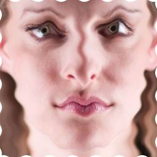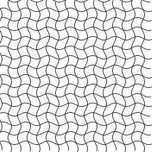
filter slice (image in)
in(xy+xy:[5*sign(cos(y/6)),5*sign(cos(x/6))])
end
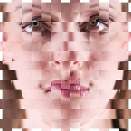
filter mercator (image in)
in(xy*xy:[cos(pi/2/Y*y),1])
end
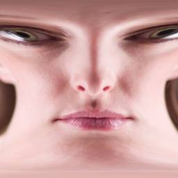
filter pond (image in)
in(ra+ra:[sin(r/3)*3,0])
end

filter twirl (image in)
in(ra+ra:[0,-(r/R-1)*pi/5])
end

filter jitter (image in)
in(ra:[r,a+a%0.14-0.07])
end
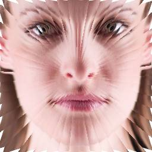
filter fisheye (image in)
in(ra:[r*r/R,a])
end
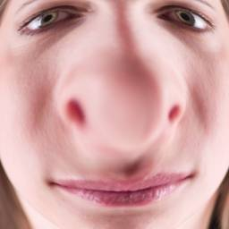
filter colorify (image in, gradient grad)
grad((gray(in(xy))+t)%1)
end
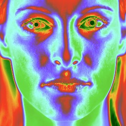
filter gamma (image in, curve gamma)
p=in(xy);
rgbaColor(gamma(red(p)),gamma(green(p)),gamma(blue(p)),alpha(p))
end
unit filter curve_bend (unit image in, float alpha: 0-6.28318530,
curve lower, curve upper)
dir = xy:[cos(alpha),sin(alpha)];
ndir = xy:[-dir[1],dir[0]];
p = xy / m2x2:[dir[0],-ndir[0],
dir[1],-ndir[1]];
pt = dir * p[0];
vec = xy - pt;
dist = -p[1];
pos = 0.5 + p[0] / 2;
lo = 1 / (lower(pos) * 4 - 2);
up = 1 / (upper(pos) * 4 - 2);
f = lo + ((dist + 1) / 2) * (up - lo);
in(pt + ndir * f)
end
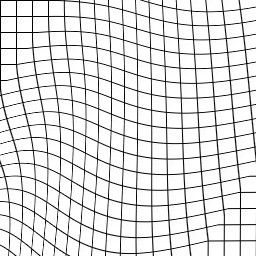
filter scatter (image in)
in(xy+xy:[rand(-3,3),rand(-3,3)])
end
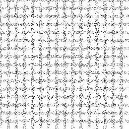
filter darts (image in)
p=in(xy);
p=if inintv((a-(pi/20))%(pi/5),0,(pi/10)) then p else -p+1 end;
if inintv(r%80,68,80) then p else -p+1 end
end
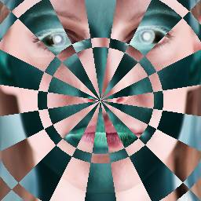
filter sphere (image in)
# Thanks to Herbert Poetzl
rd=0.9*min(X,Y);
if r>rd then
rgba:[0,0,0,1]
else
alpha=-(5/3)*pi; beta=(1/3)*pi; gamma=t*pi*2;
sa=sin(alpha);
sb=sin(beta);
ca=cos(alpha);
cb=cos(beta);
theta=a;
phi=acos(r/rd);
x0=cos(theta)*cos(phi);
y0=sin(theta)*cos(phi);
z0=sin(phi);
x1=ca*x0+sa*y0;
z1=-sa*-sb*x0+ca*-sb*y0+cb*z0;
if z1 >= 0 || 1 then
y1=cb*-sa*x0+cb*ca*y0+sb*z0
else
z1=z1-2*cb*z0;
y1=cb*-sa*x0+cb*ca*y0-sb*z0
end;
theta1=atan(-x1/y1)+(if y1>0 then pi/2 else 3*pi/2 end);
phi1=asin(z1);
in(xy:[((theta1*2+gamma)%(pi*2)-pi)/pi*X,-phi1/(pi/2)*Y])
end
end
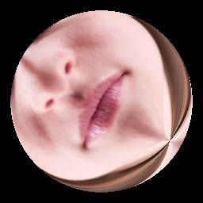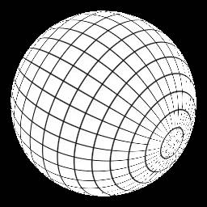
filter alpha_spiral (image in)
in(xy)*rgba:[1,1,1,0]+rgba:[0,0,0,sin((r-a*6)/6+t*2*pi)*0.5+0.5]
end
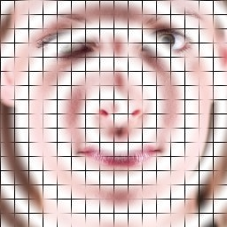
filter moire1 ()
abs(rgba:[sin(r/4)+sin(15*a),sin(r/3.5)+sin(17*a),sin(r/3)+sin(19*a),2])*0.5
end
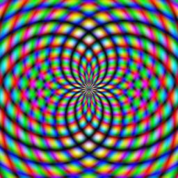
filter moire2 ()
grayColor(sin(x*y/180*pi)*0.5+0.5)
end
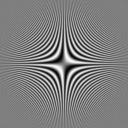
filter mandelbrot (gradient coloration)
p=ri:(xy/xy:[X,X]*1.5-xy:[0.5,0]);
c=ri:[0,0];
iter=0;
while abs(c)<2 && iter<31
do
c=c*c+p;
iter=iter+1
end;
coloration(iter/32)
end
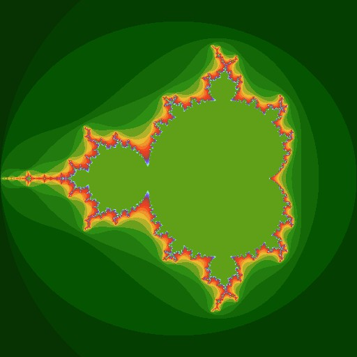